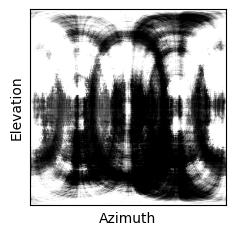
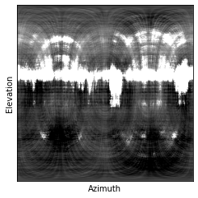
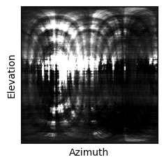

| Nearest Neigh. Input | Initial Car Mesh | Output Radiance | Predicted Texture | Illum. of Mean Texture |
| NN Input | Output | Interpolation | NN Input | Output | Interpolation | NN Input | Output | Interpolation |
| Nearest Neighbor Input | Initial Mesh | NeRS (Ours) | Shape Interpolation |
| NN Training View | NeRS | IDR | NeRF* | MetaNeRF | MetaNeRF-ft |
| NN Training View | NeRS | IDR | NeRF* | NeRS w/ NeRF-style View-dep. |
| NN Training View | NeRS | Illumin. of Mean Texture | NN Training View | NeRS | Illumin. of Mean Texture |
| Nearest Neighbor Training View | NeRS no View-Dep. | NeRS (Ours) | Illumination of Mean Texture | Environment Map |
|  | ||||
|  | ||||
|  | ||||
| Nearest Neighbor Training View | Mask Carving using Initial Cameras | Mask Carving using Pre-trained Cameras | Mask Carving using Optimized Cameras | Learned Shape Model | NeRS (Ours) |